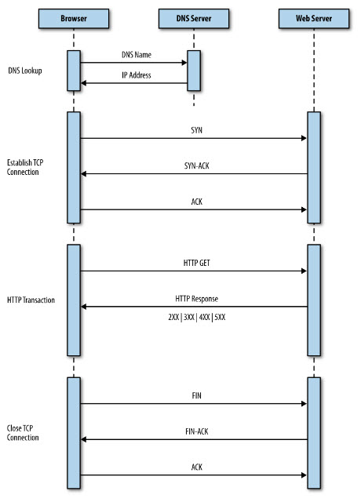
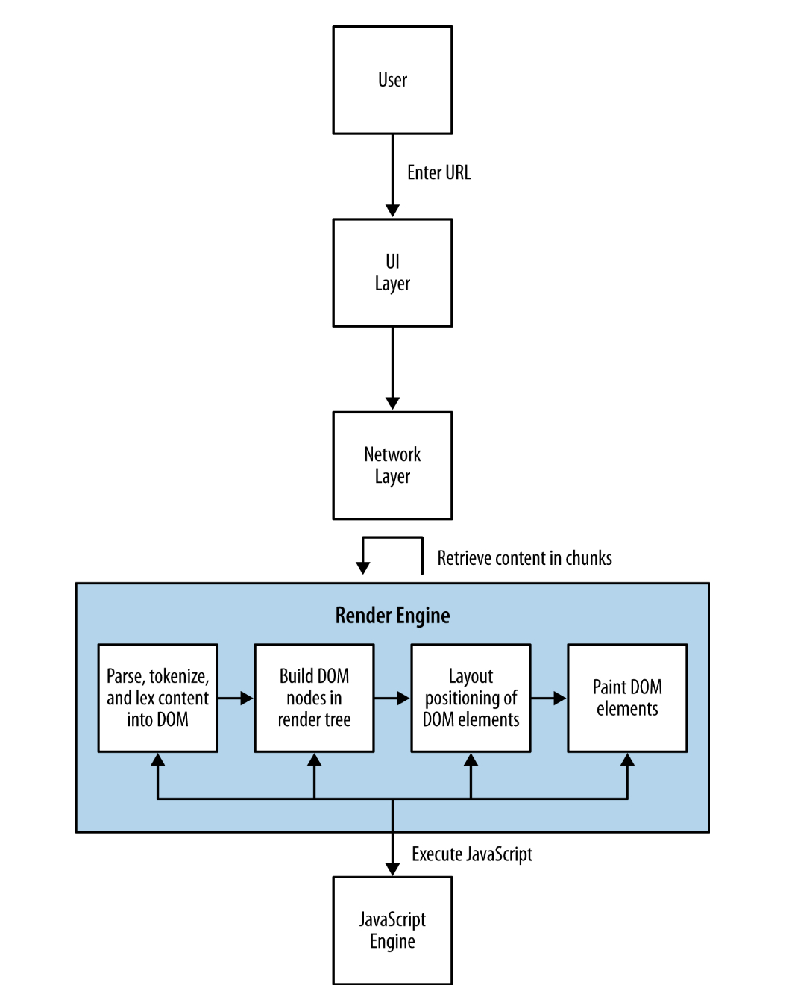
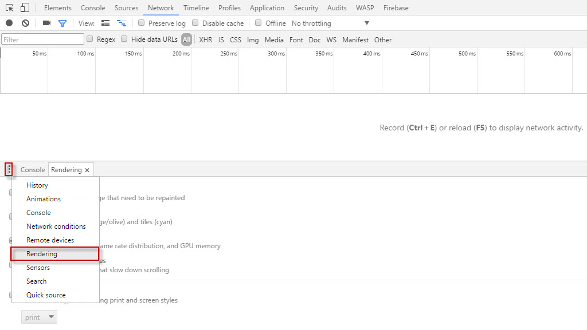
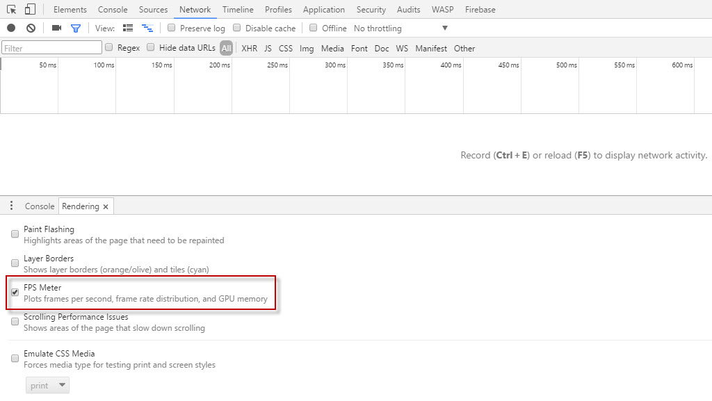
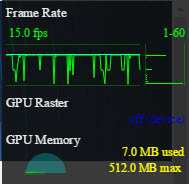
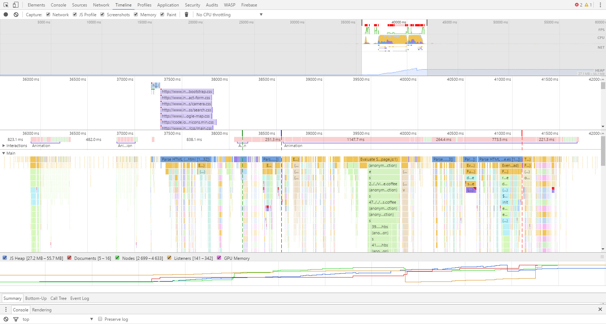
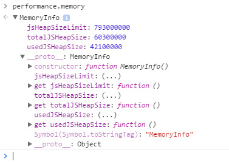

Introducción al rendimiento de las aplicaciones web
Rendimiento Web.
Piense en cada vez que ha navegado por la Web. Abre un navegador, escribe una URL y espera a que se cargue la página. El tiempo que tarda en pulsar Intro después de escribir la URL (o hacer clic en un marcador de la lista de marcadores o hacer clic en un vínculo en una página) hasta que se procese la página es el rendimiento web de la página que está visitando. Si un sitio está funcionando correctamente, no debe ser notable.
Al hablar del rendimiento estamos hablando de rendimiento web o rendimiento de tiempo de ejecución.
- Definimos el rendimiento web
- como una medida del tiempo desde el momento en que un usuario final solicita una pieza de contenido hasta cuando ese contenido está disponible en el dispositivo del usuario.
- Definimos el rendimiento en tiempo de ejecución
- como una indicación de la sensibilidad de la aplicación a la entrada del usuario en tiempo de ejecución
Ser consciente de cuantificar y elaborar estándares alrededor del rendimiento de las aplicaciones web es un aspecto crítico. Tanto el rendimiento web como el rendimiento en tiempo de ejecución tienen indicadores que se puede medir y cuantificar empíricamente.
Los tipos de indicadores que se van a utilizar:
- Indicador cuantitativo:
- un objetivo que puede ser medido empíricamente (pensar la cantidad de algo) se utiliza para predecir los resultados Indicador de entrada Se utiliza para medir los recursos consumidos durante un proceso
- Tiempo de carga de la página
- Tamaño del archivo de la página
- Número de solicitudes HTTP
- Tiempo de procesamiento de la página
- Indicador cualitativo:
- un objetivo que no puede ser medido empíricamente (piense la calidad de algo)
- Percepción de velocidad
- Indicador adelantado:
- utilizado para predecir los resultados
- Indicador de entrada:
- se utiliza para medir los recursos consumidos durante un proceso
Piense en cada vez que ha navegado por la Web. Abre un navegador, escribe una URL y espera a que se cargue la página. El tiempo que tarda en pulsar Intro después de escribir la URL (o hacer clic en un marcador de la lista de marcadores o hacer clic en un vínculo en una página) hasta que se procese la página es el rendimiento web de la página que está visitando. Si un sitio está funcionando correctamente, no debe ser notable.
Antes de estudiar los indicadores, debemos analizar primero cómo las páginas llegan al navegador y se presentan a nuestros usuarios. Cuando solicita una página web mediante el uso de un navegador, el explorador crea un subproceso para tratar la solicitud e inicia una búsqueda del Sistema de nombres de dominio (DNS) en un servidor DNS remoto que proporciona al navegador la dirección IP de la dirección URL que introdujo.
A continuación, el explorador negocia un protocolo de control de transmisión (TCP) de tres vías con el servidor web remoto para establecer una conexión de protocolo de control de transmisión / protocolo de Internet (TCP/IP). Este apretón de manos consiste en mensajes de sincronización (SYN), de sincronización-confirmación (SYN-ACK) y de confirmación (ACK) que se pasan entre el navegador y el servidor remoto.
Una vez establecida la conexión TCP, el navegador envía una solicitud HTTP GET a través de la conexión al servidor web. El servidor web encuentra el recurso y lo devuelve en una respuesta HTTP, cuyo estado es 200 para indicar una buena respuesta. Si el servidor no puede encontrar el recurso o genera un error al intentar interpretarlo, o si se redirige, el estado de la respuesta HTTP también lo reflejará. Los siguientes códigos son los más comunes:
- 200
- indica una respuesta satisfactoria del servidor
- 301
- significa una redirección permanente
- 302
- indica una redirección temporal
- 403
- es una petición prohibida
- 404
- significa que el servidor no pudo encontrar el recurso solicitado
- 500
- denota un error al intentar cumplir con la solicitud
- 503
- especifica que el servicio no está disponible
- 504
- asigna un tiempo de espera de puerta de enlace
El proceso de negociación entre el navegador y el servidor web:
Tenga en cuenta que no sólo una de estas transacciones es necesaria para publicar una sola página HTML, sino que su navegador debe realizar una solicitud HTTP para cada recurso al que se vincule la página: todas las imágenes, archivos CSS y JavaScript vinculados y cualquier otro tipo de activo externo. (Tenga en cuenta, sin embargo, que el navegador puede reutilizar la conexión TCP para cada solicitud HTTP posterior, siempre y cuando se conecte al mismo origen.)
Cuando el navegador tiene el HTML para la página, comienza a analizar y procesar el contenido. El navegador utiliza su motor de renderizado para analizar y procesar el contenido. La arquitectura moderna del navegador consta de varios módulos interactivos:
- Capa UI
- Dibuja interfaz gráfica de usuario para el explorador. Se trata de elementos como la barra de url, el botón de actualización y otros elementos de la interfaz de usuario que es nativa del navegador.
- Capa de red
- Esta capa gestiona las conexiones de red, lo que implica tareas tales como establecer conexiones TCP y gestionar los viajes de ida y vuelta HTTP. La capa de red se encarga de descargar el contenido y pasarlo al motor de renderizado.
- Motor de renderizado
- Los motores de renderizado son responsables de pintar el contenido en la pantalla. Los fabricantes de navegadores marcan y licencian sus motores de render y JavaScript, por lo que probablemente ya han escuchado los nombres de los productos para los motores de render más populares. El mecanismo de renderizado más popular es WebKit, que se utiliza en Chrome (como un fork llamado Blink), Safari y Opera, entre muchos otros. Cuando el motor de renderizado encuentra JavaScript, lo entrega al intérprete de JavaScript.
- Motor de Javascript
- Maneja el análisis y la ejecución de JavaScript. Al igual que el motor de renderización, los fabricantes de navegadores marcan sus motores de JavaScript para la concesión de licencias y es muy probable que hayan oído hablar de ellos. Un motor popular de JavaScript es el V8 de Google, que se usa en Chrome, Chromium y como motor de Node.js.
Imagine un caso de uso en el que un usuario escribe una URL en la barra de url del navegador. La capa de interfaz de usuario pasa esta solicitud a la capa de red, que establece la conexión y descarga la página inicial. A medida que los paquetes que contienen trozos de HTML llegan, se pasan al motor de renderizado. El motor de renderizado ensambla el HTML como texto sin procesar y comienza a realizar un análisis o análisis explícito de los caracteres del texto. Los caracteres se comparan con un conjunto de reglas -la definición de tipo de documento (DTD) que especificamos en nuestro documento HTML- y se convierten en tokens basados en el conjunto de reglas. El DTD especifica las etiquetas que conforman la versión del lenguaje que usaremos. Las tokens son sólo los personajes divididos en segmentos significativos.
He aquí un ejemplo de cómo la capa de red podría devolver la siguiente cadena:He aquí un ejemplo de cómo la capa de red podría devolver la siguiente cadena:
<!DOCTYPE html><html><head><meta charset="UTF-8" />
Esta cadena sería tokenizada en pedazos significativos:
<!DOCTYPE html>
<html>
<head>
<meta charset="UTF-8" />
El motor de render toma los tokens y los convierte en elementos DOM (Document Object Model) (el DOM es la representación en memoria de los elementos de la página y la API que JavaScript los utiliza para acceder a los elementos de la página). Los elementos DOM se exponen en un árbol de renderización sobre el cual el motor de render itera. En la primera iteración, el motor de render establece el posicionamiento de los elementos DOM; En la siguiente iteración, los pinta a la pantalla.
Si la capa de renderizado identifica una etiqueta de script durante la fase de análisis y de tokenización, se detiene y evalúa qué hacer a continuación. Si la etiqueta de secuencia de comandos señala un archivo JavaScript externo, el análisis se pausa y la capa de red se compromete a descargar este archivo antes de inicializar el motor de JavaScript para interpretar y ejecutar JavaScript. Si la etiqueta de secuencia de comandos contiene JavaScript en línea, la representación se pausa, el motor de JavaScript se inicializa y se interpreta y ejecuta el JavaScript. Cuando se completa la ejecución, el análisis se reanuda.
Este es un matiz importante que afecta no sólo a los elementos del DOM que están disponibles para JavaScript (nuestro código podría estar tratando de acceder a un elemento en la página que todavía no ha sido analizado y tokenizado, y mucho menos renderizado), sino también al rendimiento. Por ejemplo, ¿queremos bloquear el análisis de la página hasta que se descargue y ejecute este código o puede funcionar la página si mostramos primero el contenido y luego cargamos la página?
Un flujo de trabajo que describe la carga y representación de contenido en el navegador:
Comprender cómo se entrega el contenido al navegador es vital para comprender los factores que afectan al rendimiento de la Web. También tenga en cuenta que como resultado del programa de lanzamiento rápido de las actualizaciones del navegador, este flujo de trabajo es a veces ajustado y optimizado e incluso cambiado por los fabricantes de navegadores
Ahora que entendemos la arquitectura de cómo se entrega y se presenta el contenido, veamos nuestros indicadores de rendimiento en el contexto de este flujo de trabajo de entrega.
Número de solicitudes HTTP
Tenga en cuenta que el navegador crea una solicitud HTTP cuando recibe la página HTML y las solicitudes HTTP adicionales para cada activo al que se vincula la página. Dependiendo de la latencia de la red, cada solicitud HTTP podría agregar de 20 a 200 milisegundos al tiempo total de carga de la página (este número cambia cuando se tiene en cuenta que los navegadores pueden ser paralelos)
Esto es casi despreciable cuando se habla de un puñado de activos, pero cuando se habla de 100 o más peticiones HTTP, esto puede agregar latencia significativa al rendimiento web en general.
Sólo tiene sentido reducir el número de solicitudes HTTP que requiere su página. Hay varias maneras en que los desarrolladores pueden lograr esto, desde concatenar diferentes archivos CSS o JavaScript en un archivo, hasta fusionar todas sus imágenes de uso común en un solo archivo gráfico llamado sprite.
Carga de la página
Uno de los factores que afectan al rendimiento de la web es el tamaño total del archivo de la página. La carga útil total incluye los tamaños de archivo acumulados del HTML, CSS y JavaScript que componen la página. También incluye todas las imágenes, cookies y cualquier otro medio incorporado en la página.
Tiempo de carga de la página
El KPI real para centrarse en el rendimiento web es el tiempo de carga de la página.
El tiempo de carga de la página es el indicador de rendimiento más obvio y el más fácil de cuantificar. En pocas palabras, es el tiempo que tarda un navegador para bajar y procesar todo el contenido de la página. Históricamente, esto se ha medido como el tiempo transcurrido entre la solicitud de página y el evento onload de la ventana de la página. Más recientemente, a medida que los desarrolladores se vuelven más expertos en crear una experiencia útil antes de que la página haya terminado de cargarse, ese punto final se ha estado moviendo o incluso cambiando por completo.
Específicamente, hay ciertos casos de uso en los que se puede cargar contenido de forma dinámica después de que el evento window.onload se ha disparado -como sería el caso si, por ejemplo, cuando se puede cargar primero el contenido y cargar los anuncios posteriormente. Estos casos desvían la utilidad de seguir el tiempo de carga específico de la página en el evento window.onload.
Hay algunas opciones para eludir este dilema. Pat Meenan, quien creó y mantiene WebPageTest, ha incluido en WebPageTest una métrica llamada Índice de Velocidad que básicamente marca la rapidez con la que se procesa el contenido de la página. Algunos equipos de desarrollo están creando sus propios eventos personalizados para realizar el seguimiento cuando se cargan las partes de su página que determinan como núcleo de la experiencia del usuario.
Herramientas para realizar el seguimiento del rendimiento Web.
La herramienta más común y útil para realizar un seguimiento del rendimiento web es el gráfico de cascada. Los gráficos de cascada son visualizaciones que puedes utilizar para mostrar todos los elementos que componen una página web, todas las transacciones HTTP necesarias para cargar estos elementos y el tiempo que tarda cada solicitud HTTP. Todas estas peticiones HTTP se representan como barras, siendo el eje y el nombre o URL del recurso; A veces el tamaño del recurso y el estado HTTP de la respuesta para el recurso también se muestran en el eje y. El eje x, a veces mostrado explícitamente, a veces no, retrata el tiempo transcurrido.
Las barras de un gráfico de cascada se dibujan en el orden en que se producen las peticiones, y la longitud de las barras indica cuánto tiempo tarda la transacción en completarse. A veces, también podemos ver el tiempo total de carga de la página y el número total de peticiones HTTP en la parte inferior del gráfico de cascada. Parte de la belleza de los gráficos en cascada es que desde el diseño y la superposición de las barras también podemos determinar la carga de algunos recursos bloquea la carga de otros recursos.
Algunos navegadores proporcionan herramientas integradas, como Firebug en Firefox o las Herramientas de desarrollo de Chrome. También hay soluciones gratuitas alojadas, como webpagetest.com.
La manera más simple de generar un gráfico de cascada es utilizando una herramienta dentro del navegador. En este momento se han homogeneizado más o menos, al menos en la forma en que generan gráficos de cascada (algunas herramientas en el navegador son mucho más útiles que otros, como veremos cuando comencemos a hablar de rendimiento de tiempo de ejecución web).
Firebug fue la primera herramienta ampliamente adoptada para desarrolladores en el navegador. Disponible como plug-in de Firefox y creado por primera vez por Joe Hewitt, Firebug estableció el standard no sólo de la creación de gráficos de cascada para mostrar la actividad de red necesaria para cargar y renderizar una página, sino también para dar a los desarrolladores acceso a una consola para ejecutar JavaScript y mostrar errores, y la capacidad de depurar y paso a través de código en el navegador.
Para acceder a un gráfico de cascada en Firebug, haga clic en la ficha Red.
La industria ha evolucionado desde que Firebug salió por primera vez, y ahora los navegadores web más modernos vienen con herramientas integradas para medir al menos algunos aspectos del rendimiento. Chrome incluye las herramientas para desarrolladores, Internet Explorer tiene sus propias herramientas de desarrollo y Opera tiene Dragonfly.
En Chrome, para acceder a las Herramientas para desarrolladores, haga clic en el icono de menú de Chrome, seleccione Más Herramientas y, a continuación, haga clic en Herramientas de desarrollo.
Ahora, los dispositivos móviles tienen HTTPWatch como una aplicación nativa que puede ejecutar un navegador dentro de la aplicación y mostrar un gráfico de cascada para todos los recursos que se cargan.
Las herramientas en browser son ideales para depurar, pero si quieres empezar a buscar soluciones automatizadas que puedan trabajar en tu entorno de integración continua (CI), debes comenzar a expandir tu gama de opciones para incluir soluciones de plataforma.
Como se mencionó anteriormente, una de las principales soluciones de plataforma es WebPageTest (www.webpagetest.org), que fue creado y sigue siendo mantenido por Pat Meenan. WebPageTest está disponible como una solución alojada o una herramienta de código abierto que puede instalar y ejecutar en su red de trabajo como una copia local para probar detrás de su firewall. El repositorio de código para descargar y host está disponible en webpagetest
WebPageTest es una aplicación web que toma una URL (y un conjunto de parámetros de configuración) como entrada y ejecuta pruebas de rendimiento en esa URL. La cantidad de parámetros que podemos configurar para WebPageTest es enorme.
Puede elegir entre un conjunto de ubicaciones mundiales desde las que se pueden ejecutar las pruebas. Cada ubicación viene con uno o más navegadores que puede utilizar para la prueba en esa ubicación. También puede especificar la velocidad de conexión y el número de pruebas a ejecutar.
WebPageTest proporciona una gran cantidad de información sobre el rendimiento global de un sitio web, incluyendo no sólo gráficos de cascadas, sino también gráficos para mostrar el desglose de contenido de una página determinada (qué porcentaje de la carga útil se compone de imágenes, qué porcentaje JavaScript, etc. .), Capturas de pantalla para simular la experiencia de cómo la página se carga al usuario final, e incluso el uso de la CPU.
Lo mejor de todo es que WebPageTest es completamente programable. Proporciona una API que puede llamar para proporcionar toda esta información.
Pero al mirar las métricas del funcionamiento, los números ideales a mirar son los resultados de la supervisión verdadera del usuario (a veces llamada RUM) cosechada de sus propios usuarios. Para lograr una solución totalmente programable, el World Wide Web Consortium (W3C) ha estandarizado una API que puede utilizar para capturar y reportar datos de rendimiento en el navegador. Esto se realiza a través del objeto DOM Performance, un objeto que es nativo del objeto de ventana en todos los navegadores modernos.
A finales de 2010, el W3C creó un nuevo grupo de trabajo llamado simplemente Web Performance Working Group. Según su sitio web, la misión de este grupo de trabajo es proporcionar métodos para medir aspectos del rendimiento de las aplicaciones de las características de los agentes de usuario y las API. Lo que esto significa en un sentido muy táctico es que el grupo de trabajo ha desarrollado una API por la cual los navegadores pueden exponer a JavaScript las métricas clave de rendimiento.
Arvind Jain de Google y Jason Weber de Microsoft presiden este grupo de trabajo. Puede acceder a la página principal en Web Performance Working Group Charter. El Grupo de trabajo de rendimiento Web ha creado una serie de nuevos objetos y eventos que podemos utilizar para no sólo cuantificar métricas de rendimiento, sino también para optimizar el rendimiento. Aquí está una visión general de alto nivel de estos objetos e interfaces
- El objeto de rendimiento
- Este objeto expone varios objetos, tales como
PerformanceNavigation,PerformanceTiming,MemoryInfo, así como la capacidad de registrar el tiempo de alta resolución para tiempos por debajo de milisegundos. - La API de visibilidad de página
- Esta interfaz ofrece a los desarrolladores la capacidad de comprobar si una página determinada es visible u oculta, lo que hace posible optimizar la utilización de la memoria alrededor de animaciones o recursos de red para operaciones de sondeo.
Si escribe window.performance en una consola de JavaScript, verá que devuelve un objeto de tipo Performance con varios objetos y métodos que expone. A partir de esta escritura, el conjunto estándar de objetos es window.performance.timing para el type PerformanceTiming y window.performance.navigation para el type PerformanceNavigation. Chrome soporta window.performance.memory para el tipo MemoryInfo.
Es el objeto PerformanceTiming el que es más útil para monitorear métricas de usuario real.
Tenga en cuenta que el propósito del monitoreo real del usuario es recopilar métricas reales de rendimiento de usuarios reales, en oposición a las pruebas de rendimiento sintéticas, que genera pruebas artificiales en un laboratorio o con un agente siguiendo un script prescrito. El beneficio de RUM es que captura y analiza el rendimiento real de su base de usuarios real.
| Propiedad | Descripción |
|---|---|
| navigationStart | Captura cuando comienza la navegación, ya sea cuando el navegador empieza a descargar la página anterior si la hay, o si no, cuando empieza a buscar el contenido. Podrá contener los datos unloadEventStart o los datos fetch-Start. Si desea realizar un seguimiento del tiempo de extremo a extremo, a menudo comenzará con este valor. |
| unloadEventStart / unloadEventEnd | Captura cuando el navegador comienza a descargar y termina de descargar la página anterior (si hay una página anterior en el mismo dominio para descargar). |
| domainLookupStart / domainLookupEnd | Captura cuando el navegador comienza y completa la búsqueda de DNS para el contenido solicitado. |
| redirectStart / redirectEnd | Captura cuando el navegador comienza y completa cualquier redirección de HTTP. |
| connectStart / connectEnd | Captura cuando el navegador comienza y finaliza estableciendo la conexión TCP con el servidor remoto para la página actual. |
| fetchStart | Captura cuando el navegador comienza a comprobar la memoria caché del recurso solicitado |
| requestStart | Captura cuando el navegador envía la solicitud HTTP para el recurso solicitado |
| responseStart / responseEnd | Captura cuando el navegador primero se registra y termina de recibir la respuesta del servidor. |
| domLoading / domComplete | Captura cuando el documento comienza y finaliza la carga. |
| domContentLoadedEventEnd / domContentLoadedEventStart | Captura cuando el evento DOMContentLoaded del documento comienza y termina de cargarse, lo que corresponde a cuando el navegador ha completado la carga de todo el contenido y ejecutando todos los scripts incluidos en la página. |
| domInteractive | Captura cuando la propiedad Document.readyState de la página cambia a 'interactive', provocando que el evento readystatechange se dispare. |
| loadEventEnd / loadEventStart | Captura directamente antes del punto en el que se dispara el evento de carga y justo después de que se dispara el evento de carga. |
Puede crear sus propias bibliotecas JavaScript para integrar sus páginas y capturar el RUM real del tráfico de usuarios. Esencialmente, JavaScript captura estos eventos y los envía a un extremo del servidor que puede configurar para guardar y analizar estas métricas. perfLogger
Rendimiento de ejecución Web.
Como hemos estado discutiendo, el rendimiento web controla el tiempo que se tarda en entregar contenido al usuario. Ahora es el momento de ver el rendimiento de ejecución web, que rastrea cómo se comporta su aplicación cuando el usuario comienza a interactuar con ella.
Para las aplicaciones compiladas tradicionales, el rendimiento en tiempo de ejecución se trata de administración de memoria, recolección de basura y los hilos. Esto se debe a que las aplicaciones compiladas se ejecutan en el kernel y utilizan los recursos del sistema directamente.
Ejecutar aplicaciones web en el lado del cliente es diferente de ejecutar las aplicaciones compiladas. Esto se debe a que se están ejecutando en un sandbox, o para ponerlo más específicamente, en el navegador. Cuando se ejecutan, las aplicaciones web utilizan los recursos del navegador. El navegador, a su vez, tiene su propia huella de memoria virtual preasignada del kernel en el que se ejecuta y consume recursos del sistema.
Por lo tanto, cuando hablamos de rendimiento de ejecución web, estamos hablando de cómo nuestras aplicaciones se ejecutan en el lado del cliente en el navegador, y lo que el navegador realice en la memoria virtual.
Los siguientes son algunos de los factores que necesitamos considerar que impactan el rendimiento del tiempo de ejecución web:
- Gestión de memoria y recolección de basura
- Una de las primeras cosas que necesitamos ver es si estamos obstruyendo la asignación de memoria del navegador con objetos que no necesitamos y reteniendo esos objetos mientras creamos aún más. ¿Tenemos algún mecanismo para tapar la creación de objetos en JavaScript con el tiempo, o la aplicación consumirá más memoria y se utilizará más tiempo? ¿Hay una fuga de memoria?
La recolección de basura de objetos innecesarios puede causar pausas en el procesamiento o de las animación que pueden hacer que su experiencia de usuario parezca irregular. Podemos minimizar la recolección de basura reduciendo la cantidad de objetos que creamos y reutilizando objetos cuando es posible. - Diseño
- ¿Estamos actualizando el DOM para que la página se vuelva a representar alrededor de nuestras actualizaciones? Esto se debe generalmente a los cambios de estilo a gran escala que requieren que el motor de renderizado vuelva a calcular los tamaños y ubicaciones de elementos en la página.
- Pinturas caras
- ¿Estamos gravando el navegador haciéndolo repintar áreas a medida que el usuario desplaza la página? Animar o actualizar cualquier propiedad de elemento que no sea la posición, la escala, la rotación o la opacidad hará que el motor de renderizado repinta ese elemento y consuma ciclos. La posición, la escala, la rotación y la opacidad son las propiedades finales de un elemento que el motor de renderizado configura, y por lo tanto tomará la menor cantidad de reelaboración para actualizarlas.
Si animamos el ancho, la altura, el fondo o cualquier otra propiedad, el motor de render tendrá que caminar a través del diseño y volver a pintar los elementos, lo que consumirá más ciclos para renderizar o animar. Aún peor, si causamos un repintado de un elemento padre, el motor de renderizado tendrá que volver a pintar todos los elementos secundarios, completando el golpe en el rendimiento en tiempo de ejecución. - Llamadas sincrónicas
- ¿Estamos bloqueando la acción del usuario porque estamos esperando una llamada sincronizada para volver? Esto es común cuando tiene casillas de verificación o alguna otra forma de aceptar el estado de entrada y actualización en el servidor y esperar para obtener confirmación de que la actualización ha ocurrido. Esto hará que la página parezca lenta.
- Uso de CPU
- ¿Qué tan difícil es trabajar con el navegador para procesar la página y ejecutar nuestro código de cliente?
Los indicadores de rendimiento que estaremos buscando para el rendimiento de tiempo de ejecución web son los frames por segundo y el uso de la CPU.
Frames por segundo.
Frames por segundo (FPS) es una medida familiar para los animadores, desarrolladores de juegos y cinematógrafos. Es la velocidad a la que un sistema vuelve a dibujar una pantalla. Por la excelente publicación de Paul Bakaus en el blog "La ilusión del movimiento" The Illusion of Motion, la velocidad de fotogramas ideal para que los humanos perciban un movimiento suave y similar a la vida es de 60 FPS.
También hay una aplicación web llamada Frames por segundo http://frames-per-second.appspot.com que muestra animaciones en un navegador con diferentes velocidades de fotogramas. Es interesante ver la demostración y ver cómo sus propios ojos reaccionan a las mismas animaciones a diferentes velocidades de fotogramas.
FPS también es un indicador de rendimiento importante para los navegadores porque refleja cómo se ejecutan sin problemas las animaciones y se desplaza la ventana. La apariencia aspera al hacer scroll se ha convertido en un sello distintivo para los problemas de ejecución web runtime.
Monitorizar FPS en Google Crome.
Google es actualmente el líder en la creación de herramientas en el navegador para realizar un seguimiento del rendimiento en tiempo de ejecución. Incluye la posibilidad de realizar un seguimiento de FPS como parte de las herramientas de desarrollo integradas de Chrome. Para ver esto, haga clic en la pestaña Rendering y luego marque la casilla "Show FPS meter"
  Esto hace que un pequeño gráfico de series de tiempo en la parte superior derecha del navegador que muestra el FPS actual, así como la forma en que el número de fotogramas por segundo ha sido tendencia. Utilizando esto, puede explícitamente rastrear cómo se realiza su página durante el uso real.
Aunque el medidor FPS es una gran herramienta para realizar un seguimiento de los fotogramas por segundo, la herramienta más útil, hasta ahora, para depurar la razón por qué está experimentando descensos en la velocidad de fotogramas es la herramienta Línea de tiempo, también disponible en las Herramientas de desarrollo de Chrome.
Utilizando la herramienta Línea de tiempo, puede realizar un seguimiento y analizar lo que el navegador está haciendo a medida que se ejecuta. Ofrece tres modos de funcionamiento: Marcos, Eventos y Memoria. Echemos un vistazo al modo Marcos.
En este modo, la herramienta Línea de tiempo expone el rendimiento de la representación de la aplicación web.
 Chrome DevToolsPerfil de Memoria
El perfil de memoria es la práctica de monitorear los patrones de consumo de memoria que usan nuestras aplicaciones, es útil para detectar fugas de memoria o la creación de objetos que nunca se destruyen. En JavaScript, esto suele ser cuando asignamos asignaciones programadas de eventos a objetos DOM y olvidamos eliminar los manejadores de eventos. Más matizado que sólo detectar fugas, el perfil también es útil para optimizar el uso de memoria de nuestras aplicaciones con el tiempo. Deberíamos crear, destruir o reutilizar objetos inteligentemente y tener siempre presente el alcance para evitar gráficos de perfiles que tiendan hacia arriba en una serie cada vez mayor de picos.
Aunque las capacidades dentro del navegador son mucho más robustas de lo que han sido, este es todavía un área que necesita ser expandida y estandarizada. Hasta ahora, Google ha hecho lo máximo para que las herramientas de administración de la memoria del navegador estén disponibles para los desarrolladores.
El objeto MemoryInfo
Entre las herramientas de administración de memoria disponibles en Chrome, la primera que examinaremos es el objeto MemoryInfo, que está disponible en la Consola a través del objeto Performance.
Propiedades:
jsHeapSizeLimit- Límite superior
usedJSHeapSize- La cantidad de memoria que usan todos los objetos actuales
totalJSHeapSize- El tamaño total de la pila incluyendo espacio libre no utilizado por los objetos
Estas propiedades hacen referencia a la disponibilidad y el uso de la pila de JavaScript. La pila es la colección de objetos JavaScript que el intérprete mantiene en la memoria residente. En la pilap, cada objeto es un nodo interconectado, conectado a través de propiedades tales como la cadena de prototipos o objetos compuestos. JavaScript que se ejecuta en el navegador hace referencia a los objetos en la pila a través de referencias de objetos. Cuando destruyes un objeto en JavaScript, lo que realmente estás haciendo es destruir la referencia del objeto. Cuando el intérprete ve objetos en la pila sin referencias de objetos, el proceso de recolección de basura elimina el objeto del montón.
Usando el objeto MemoryInfo, podemos extraer RUM del consumo de memoria para nuestra base de usuarios, o podemos rastrear estas métricas en nuestro laboratorio para identificar posibles problemas de memoria antes de que nuestro código vaya a la producción.
La herramienta Timeline
Además de ofrecer el modo Frames para depurar la velocidad de fotogramas de una aplicación web, la herramienta Línea de tiempo de Chrome también tiene el modo Memoria para visualizar la memoria utilizada por la aplicación a lo largo del tiempo y expone el número de documentos, Nodos DOM y listeners de eventos que se almacenan en la memoria.
El panel superior muestra el gráfico de perfil de memoria, mientras que el panel inferior muestra el recuento de documentos, nodos y oyentes. Observe cómo el área sombreada azul representa el uso de memoria, visualizando la cantidad de espacio de montón utilizado. A medida que se crean más objetos, el uso de memoria sube; Como esos objetos son destruidos y la basura recogida, el uso de memoria cae.
Puede encontrar un gran artículo sobre la gestión de la memoria desde Mozilla Developer Network en Memory Management
Firefox ha comenzado a exponer el uso de la memoria también, a través de una página "about: memory", aunque la implementación de Firefox es más una página informacional estática que una API expuesta. Como tal, debido a que no se puede conectar fácilmente a un proceso programático y generar datos empíricos, la página about: memory se adapta más a los usuarios de Firefox (aunque usuarios avanzados) en lugar de ser parte del conjunto de herramientas del desarrollador.
Para acceder a la página "about: memory" en Firefox, en la barra de localización del navegador, escriba about: memory.
Comience con un plan
Un viaje por una pendiente resbaladiza
Los proyectos responsive no son realmente diferentes de cualquier otro proyecto, en tanto que generalmente se beneficiarán de tener un plan de proyecto. En la literatura de gestión de programas y proyectos, existen varios tipos de los planes de proyecto, dependiendo de la metodología, organización, sector empresarial y a quiénes se pide (entre otros factores), pero en general, los planes del proyecto constarán de los siguientes pasos:
- Evaluar/resumir la tarea general
- Establezca metas y plazos concretos
- Listar dependencias y riesgos
- Listar indicadores clave de rendimiento (KPI) que miden el éxito
La única diferencia con un proyecto responsive es que los requisitos que hablan de las experiencias de los distintos dispositivos deben ser explícitos en cada uno de los pasos antes mencionados. Echemos un vistazo a cada uno de estos pasos con mayor detalle.
Evaluación y resumen de la tarea general
La evaluación de la tarea general implica la recopilación de requisitos y la determinación de la estrategia de contenido para su proyecto. Esto podría significar tener una discusión con sus accionistas o gerente de producto para establecer la filosofía o visión de su sitio y los casos de uso previstos para los que está desarrollando. Esto también podría significar trabajar con ellos para realizar extensas pruebas de usuario y análisis competitivo para determinar la estrategia de contenido.
Parte de la evaluación de la tarea es responder a ciertas preguntas pertinentes. Por ejemplo, ¿está intentando volver a crear la experiencia de visualización de una pantalla de vídeo o intenta publicar contenido textual? ¿Está creando una experiencia complementaria para un producto de televisión o está creando una experiencia de intranet disponible para un grupo de usuarios?
¿Su proyecto incluso necesita ser responsive? Hace varios años trabajé en un proyecto de aplicación web que tenía por objeto ayudar a los administradores de la construcción a identificar peligros evidentes, como la suciedad volteada que no estaba rodeada por vallas de limo. Por la naturaleza misma de este caso de uso único, el proyecto nunca necesitó una experiencia de escritorio, por lo que construimos para las dimensiones de smartphone y dejar que el tamaño de la página naturalmente a escala para las experiencias de escritorio (no había tabletas en ese entonces).
Los casos de uso y la visión general del proyecto deben responder explícitamente a la pregunta: ¿cuáles son los viewports que estoy apuntando para este proyecto? Estas ventanas deben ser parte de sus necesidades, y mientras avanzamos en cada paso del plan del proyecto, nos referiremos a ellos, pero de nuevo el primer paso es identificar cuáles estamos explícitamente dirigidos.
Más allá de la diferencia de tamaño, también debe tener en cuenta la diferencia en la distancia de visualización, duración de la batería y velocidad y fiabilidad de la red para cada experiencia de dispositivo.
Los estudios han revelado que la distancia promedio desde la cara de un usuario a la pantalla para teléfonos inteligentes es sólo 30 cm .1 Compare esto con un promedio de 60 cm para portátiles, 2 y 250 cm para televisores.
Estas variaciones en las distancias de visualización significan diferencias en, entre otras cosas, la imagen y tamaños de fuente, cada uno de los cuales requiere diferentes reglas CSS y potencialmente diferentes imágenes para cada experiencia. Es necesario tener en cuenta estos cuando se evalúa el tamaño de las tareas generales.
Las velocidades promedio de la red son igualmente escalonadas entre los medios. Según el informe de Akamai en 2013 "Estado de Internet", la velocidad media de conexión de banda ancha en los Estados Unidos era de 11,6 megabits por segundo (Mbps), mientras que la velocidad media de conexión móvil 5.3 Mbps.
Q1 2016 State of the Internet - Connectivity Report | Akamai
Esta discrepancia en la velocidad de conexión, obviamente, habla de la cuestión de cuánto tiempo se tarda en entregar y hacer el contenido de un dispositivo. Esto significa que necesita planificar su conjunto de funciones y su presupuesto de rendimiento en consecuencia.
Establecer hitos y líneas de tiempo aproximados
No planificar en el vacío; Después de haber establecido los puertos de vista de destino, debe realizar un análisis competitivo. Hacer el esfuerzo de investigar las aplicaciones internas y externas que sirven funciones similares y llegar a una base de rendimiento para cada experiencia de dispositivo basado en este análisis competitivo. Mire inteligentemente cuál es el panorama actual para el rendimiento y tome una decisión intencional de dónde en ese paisaje desea que esté su aplicación.
En un análisis teórico competitivo de tiempos de carga de páginas para experiencias móviles podemos ver que la mayoría de nuestros competidores internos y externos caen en el rango de 500 milisegundos a 1 segundo. ¿Es un rango aceptable para nuestra aplicación web, o queremos ser líderes de rendimiento y objetivo para el nivel de 500 milisegundos? ¿Qué tipo de características tienen los sitios en ese rango, y estan por abajo de nuestro conjunto de funciones para obtener tiempos de carga de página tan bajo?
Esta decisión es donde usted está posicionando intencionalmente su aplicación en la línea de base del rendimiento. Este es su contrato de nivel de servicio de rendimiento.
Determinar un acuerdo de nivel de servicio de rendimiento
Un acuerdo de nivel de servicio (SLA) es un compromiso de calidad de un proveedor de servicios, tradicionalmente estipulando aspectos tales como tiempos de respuesta, tiempos de aumento y tasas de error. Como propietarios de un sitio web, ese sitio es un servicio que estamos proporcionando y debemos sentirnos obligados a proporcionar un SLA a nuestros usuarios finales, así como a las partes interesadas internas para saber cómo funciona nuestro sitio web.
Su rendimiento SLA debe ser explícito tanto en lo que se indica y en cómo se medirá. Un SLA de buen rendimiento podría leerse como sigue:
O el percentil 95, los tiempos de carga de página de nuestro sitio web será de 1 segundo o menos en una experiencia de pantalla pequeña, y 3 segundos o menos en una experiencia de pantalla grande, medida a través de pruebas sintéticas
Cuando determine su SLA de rendimiento, esta decisión debe influir en las características que pone en cada experiencia y en cómo se muestran. También debe publicar este SLA en su documentación para ponerlo a disposición de su equipo y los interesados.
Hechos y cronogramas
Ahora que tiene una comprensión basada no sólo en lo que es la solicitud de producto, sino también en lo que realmente implicaría desde una perspectiva de rendimiento, puede empezar a materializar su implementación. Esto puede ser tan rico y complejo como una estructura arborescente jerárquica de historias de usuario, hasta un nivel tan alto como una hoja de cálculo de pasos.
Sin embargo, todos los estados específicos de su dispositivo / resolución / estado de visualización son explícitamente llamados y contabilizados como hitos en la línea de tiempo general.
Para ser claros, las historias de alto nivel que estamos indicando (vista Crear 1024 × 768, Crear 2560 × 14 40) no suponen que se trate de páginas distintas o algo parecido. Colección de hitos que se logrará (objetivos, si se quiere); Las tácticas de cómo lograr eso no están implícitas.
Oh, una cosa más: debido a que nos hemos comprometido a adherirnos a un SLA por desempeño, debemos asegurarnos de incluir historias de alto nivel que definen la configuración de la infraestructura y el proceso de monitoreo de nuestro SLA. Añadamos estas historias de apoyo a nuestra lista existente.
Lista de Dependencias y Riesgos
Después de tener las historias de alto nivel trazadas con estimaciones de tiempo para cada una, podemos comenzar a profundizar los riesgos y las dependencias de cada historia. Éstos deben ser bastante sencillos y de sentido común, pero todavía es necesario llamarlos para que tomen en cuenta adecuadamente los pasos necesarios para llevar a cabo las historias y para mostrar a sus interesados que esos pasos se están tomando.
Podemos ver que las dependencias tienen los diseños, tienen ambientes configurados y tienen un SLA de rendimiento definido. Al llamarlos explícitamente, podemos ver qué historias necesitan ser predicadas por otras historias. También nos permite diseñar un cronograma significativo escalonando estas historias.
Creando líneas de tiempo
Ahora que conocemos los pasos que estarán involucrados en completar la tarea, podemos construir cronogramas muy toscos. Mediante el uso de alto nivel para cada tarea podemos agruparlos de una manera significativa y colocarlos horizontalmente a través de una línea de tiempo.
Para este ejemplo, supongamos que tenemos iteraciones de dos semanas. Suponiendo que conocemos la velocidad de nuestro equipo, podemos construir un swag muy duro de lo que cabría en cada iteración. Podemos agrupar toda la investigación y crear historias en una sola iteración. Entonces podemos agrupar un puñado de historias en otra iteración, y el resto de las historias en una tercera iteración.
Con la siguiente metodología, podemos ver que la tarea es probablemente por lo menos un proyecto de seis semanas.
Lo importante a tener en cuenta aquí es que estos son plazos muy aproximados. Hace un momento, usé intencionalmente la palabra "swag", que significa Scientific Wild-Ass Guess. En una sociedad ligeramente más educada, algunas veces se la denomina estimación, o parte posterior del cálculo de la servilleta. Mientras esté claro con sus grupos de interés que esta línea de tiempo está sujeta a cambios a medida que obtenga más información y continúe comunicándose a medida que surjan nuevos desarrollos, debería ser bueno
KPIs que miden el éxito
Hasta ahora hemos evaluado la tarea, hemos creado cronogramas aproximados a su alrededor y hemos enumerado las dependencias involucradas en el logro de esos plazos. A continuación, debemos asegurarnos de que tenemos criterios claramente definidos para el éxito. En realidad, los KPI que miden el éxito del proyecto ya deben existir antes de que nuestro equipo de productos o de negocios venga a nosotros con la pregunta, pero necesitamos trabajar con ellos para asegurar que primero estos KPIs sean visibles y obvios para todo el equipo, Y segundo que nuestra solución a la pregunta realmente está alineada para satisfacer los criterios previstos.
Si los KPI no se determinan en este punto, necesitamos colaborar con nuestros grupos de interés para establecerlos. ¿De qué otra manera sabremos si nuestro proyecto es un éxito, y de qué otra manera podremos iterar para mejorar esos resultados?
Ahora tenemos un plan de lo que necesitamos hacer, hemos identificado hitos, y nos estamos comunicando cuando tendremos cada milla de piedra completa. Tenemos un SLA de rendimiento para cada experiencia; Estamos listos para comenzar el trabajo.
Pero durante el desarrollo es imprescindible atenerse a nuestro rendimiento SLA. Debe asegurarse de que las pruebas de rendimiento forman parte de su flujo de trabajo de integración continua y de que las alertas se desactivan cuando viola su SLA.
Utilice su SLA como punto de discusión al evaluar nuevas características. ¿Impactarán estas nuevas características su rendimiento? ¿Algún cambio en la regla de negocios resultará en un producto de mayor rendimiento?
Front End
Trabajar con imágenes
Posiblemente el mayor impacto que podemos tener en el rendimiento de respuesta desde el lado del cliente es optimizar la entrega de imágenes a los clientes de móviles.
Las imágenes responsive necesitan escalarse. Esto se ha logrado normalmente, ya sea simplemente cambiando el tamaño de las imágenes a través de CSS, o guardando imágenes dos veces más grandes de lo necesario y luego reduciéndolas a través de CSS. Pero de nuevo, estas soluciones son en realidad antipatrones de rendimiento: cargar los mismos activos para todos los dispositivos y cargar los activos con el doble del tamaño.
Para que un sitio sea verdaderamente sensible a las necesidades de rendimiento de los usuarios -incluidas las restricciones de ancho de banda, la duración de la batería, la densidad de píxeles y el tamaño de la ventana de visualización- debemos seguir el patrón de carga de dispositivos apropiados.
Este aspecto de la capacidad de respuesta, específicamente las imágenes responsive, es claramente un área que necesita de estandarización.
El atributo srcset
escss.blogspot responsive-images-picture-srcset
Automating DPR switching with Client-Hints
Una de las opciones actuales para servir imágenes sensibles es el atributo srcset de la etiqueta img. El atributo srcset es una actualización de la etiqueta img mediante la cual puede especificar diferentes imágenes para utilizar para las diferentes proporciones de píxeles de los dispositivos cliente. Echemos un vistazo a lo que exactamente eso significa.
<img src="1x.jpg" srcset="2x.jpg 2x">
Observando el código fuente anterior, puede ver que una imagen predeterminada, 1x.jpg, se especifica en el atributo src de la etiqueta img. El valor predeterminado existe para compatibilidad con versiones anteriores, en caso de que el explorador no admita srcset. A continuación, establezca el atributo srcset y apunta a una imagen diferente -en este caso, 2x.jpg- que el navegador debe usar si la relación de píxeles del dispositivo es 2.
La relación de píxeles del dispositivo es la relación entre píxeles físicos y píxeles independiente del dispositivo. El ejemplo clásico es un iPad Retina de 1.024 píxeles físicos de ancho, pero debido a que es una pantalla de Retina tiene un ancho de píxeles real de 2,048. Así pues, el cálculo para determinar la proporción del pixel del dispositivo para un iPad Retina sería el siguiente:
[Píxeles independientes del dispositivo] divididos por [píxeles físicos]
o
2,048/1,024 = 2
El valor de la relación de píxeles de un dispositivo se expone al explorador a través de la propiedad window.devicePixelRatio.
La desventaja de usar el atributo srcset es que está enviando bytes extraños en la carga útil especificando todas las imágenes que necesitamos.
La parte superior del atributo srcset, además de hacer posible que se especifiquen varias imágenes para usar en los requisitos específicos del dispositivo y que no se necesite descargar varias imágenes, es que está empezando a ser compatible con los navegadores modernos, a diferencia de nuestro próximo tema de discusión , el elemento picture.
El elemento <picture> es un elemento de HTML5. Conceptualmente, es un elemento de contenedor que contiene diferentes etiquetas de origen que especifican las imágenes a utilizar en función de las restricciones del dispositivo, el ancho de la ventana de visualización y la densidad de píxeles. También puede contener una etiqueta <img> que permita una alternativa.
El elemento <source> admite un atributo que especifica el tipo de medio y la propiedad CSS y un elemento src que puede especificar una imagen para descargar para ese destino y propiedad CSS.
Si volviera a crear el ejemplo anterior de srcset en el que orientábamos los tablets y teléfonos de alta densidad de píxeles, utilizando el elemento <picture>, sería similar al siguiente:
<picture>
<source media="(min-width: 640px, min-device-pixel-ratio: 2)" src=" hi-res_small.jpg ">
<source media="(min-width: 2048px, min-device-pixel-ratio: 2)" src=" hi-res_large.jpg ">
<img src="1x.png ">
</picture>
Lo que hace que el elemento <picture> sea realmente interesante es que también soporta el atributo srcset. La combinación de los dos parecería lo siguiente:
<picture>
<source srcset="big.jpg 1x, big-2x.jpg 2x, big-3x.jpg 3x" type="image/jpeg" media="(min-width: 40em)" />
<source srcset="med.jpg 1x, med-2x.jpg 2x, med-3x.jpg 3x" type="image/jpeg" />
<img src="fallback.jpg" alt="fancy pants" />
</picture>
Tanto el atributo srcset como el elemento <picture> son interesantes soluciones potenciales. Si comparáramos las dos soluciones desde una perspectiva de rendimiento, en teoría ambas deberían descargar el recurso apropiado basado en las capacidades del cliente, pero el elemento <picture> es claramente más detallado que simplemente usar la etiqueta <img> con el atributo srcset.
Si quisiéramos cuantificar esa sentencia, el ejemplo de srcset usó el 60 por ciento Menos de bytes que el elemento <picture>.
Cuando se ven por sí mismos, los números 95 y 231 bytes parecen bastante inofensivos. Pero eso es para una sola etiqueta <img>.
Las 14 reglas de Steve Souders
Las 14 reglas de Steve Souders.
- Regla 1 - Hacer pocas peticiones HTTP
- Regla 2 - Usar CDNs
- Regla 3 - Especificar expiración en la caché del navegador
- Regla 4 - Habilitar la compresión GZip
- Regla 5 - Poner las hojas de estilo en la parte superior
- Regla 6 - Poner los scripts en la parte inferior
- Regla 7 - Evitar expresiones CSS
- Regla 8 - Hacer externos el CSS y el JavaScript
- Regla 9 - Reducir resolver CDN
- Regla 10 - Minificar el JavaScript y el CSS
- Regla 11 - Evitar redirecciones
- Regla 12 - Eliminar scripts y CSSs duplicados
- Regla 13 - Configurar eTags
- Regla 14 - Hacer AJAX cacheable
Google - Las Reglas del PageSpeed Insights
PageSpeed Insights.
Las reglas del PageSpeed Insights son muy importantes tanto para los usuarios como para Google. Google utiliza la velocidad de tu página web como un factor de clasificación.
- Regla 1 - Especificar la caché del navegador
- Regla 2 - Aplazar la carga de JavaScript
- Regla 3 - Evitar JavaScript que bloquea el contenido
- Regla 4 - Priorizar el contenido visible
- Regla 5 - Habilitar la compresión GZip
- Regla 6 - Optimizar la entrega de CSS
- Regla 7 - Combinar CSS Externos
- Regla 8 - Minificar CSS
- Regla 9 - Utiliza CSS en línea cuando es pequeño
- Regla 10 - Evita usar @import en CSS
- Regla 11 - Combinar JavaScript externos
- Regla 12 - JavaScript en línea cuando es pequeño
- Regla 13 - Las hojas de estilo CSS deben ser colocados antes de los scripts
- Regla 14 - Imágenes con CSS sprites
- Regla 15 - Imágenes a escala real
- Regla 16 - indicar las dimensiones de las imágenes en HTML (¡Retina /2!)
- Regla 17 - Evitar solicitudes incorrectas
- Regla 18 - Evitar el método document.write
- Regla 19 - Habilitar Keep Alive
- Regla 20 - Minimizar consultas DNS
- Regla 21 - Minimizar redirecciones
- Regla 22 - Configurar el archivo .htaccess
- Regla 23 - Optimizar imágenes
- Regla 24 - Evitar los plugins
- Regla 25 - Configurar el meta viewport
- Regla 26 - Evitar anchos en px y posicionamientos absolutos
- Regla 27 - Usabilidad - Aplicar el tamaño adecuado a los botones táctiles
- Regla 28 - Usabilidad - Utilizar tamaños de fuente que se puedan leer
Las 23 reglas de YSlow Ponderadas
Las 23 reglas de YSlow Ponderadas.
| Regla | Peso | Puntos | Configuración | Puntos |
|---|---|---|---|---|
| Hacer pocas peticiones HTTP | 8 | js = 3 css = 4 css images = 3 |
max js = 3 max css = 2 max css images = 6 |
(N JS - 3) * 3 (N CSS - 2) * 4 (N CSS images - 6) * 3 |
| Usar CDNs | 6 | 10 | patterns = CDN hostname RegExp patterns types = js, css, image, cssimage, flash, favicon |
N RegExp mismatches * 10 (ignores /favicon.ico) |
| Evitar src o href vacios | 30 | 100 | - | N empty src <img> * 100 N empty src <script> * 100 N empty href <link rel="stylesheet"> * 100 |
| Especificar expiración en la caché del navegador | 10 | 11 | how far = 172800s (2 days) types = js, css, image, cssimage, flash, favicon |
N (unexpired or expiring in < 2 days of any type) * 11 |
| Habilitar la compresión GZip | 8 | 11 | min file size = 500 bytes types = doc, iframe, xhr, js, css |
N (uncompressed or file size < 500b of any type) * 11 |
| Poner las hojas de estilo en la parte superior | 4 | 10 | - | 1 + N CSS link tag on BODY * 10 |
| Poner los scripts en la parte inferior | 4 | 5 | - | N JS on HEAD * 5 ignores injected, defered and async JS |
| Evitar expresiones CSS | 3 | 2 | - | N expressions on CSS links or inline STYLE * 2 |
| Hacer externos el CSS y el JavaScript | 4 | n/a | - | none |
| Reducir resolver CDN | 3 | 5 | max domains = 4 | N domains > 4 AND (N domains - 4) * 5 |
| Minificar el JavaScript y CSS | 4 | 10 | types = js, css | N (unminified JS or CSS external or inline) * 10 |
| Evitar redirecciones | 4 | 10 | - | N redirects * 10 |
| Eliminar scripts y CSSs duplicados | 4 | 5 | types = js, css | N (duplicated JS or CSS) * 5 |
| Configurar eTags | 2 | 11 | types = js, css, image, cssimage, flash, favicon | N bad etag of any type * 11 |
| Hacer AJAX cacheable | 4 | 5 | min cache time = 3600s | N (uncached or expiring in < 3600s) XHR * 5 |
| Usar GET para solictudes AJAX | 3 | 5 | - | N XHRs not using GET * 5 |
| Reducir el número de elementos del DOM | 3 | 10 | range = 250 max dom = 900 |
N DOM elements > 900 AND (N DOM elements - 900) / 250 * 10 |
| Evitar errores HTTP 404 (No Encontrado) | 4 | 5 | types = js, css, image, cssimage, flash, favicon, xhr | N 404 * 5 |
| Reducir el tamaño de las Cookies | 3 | 10 | max cookie size = 1000 | cookie size > 1000 AND 1 + (cookie size / 1000) * 10 |
| Usar cookie-free domains | 3 | 5 | types = js, css, image, cssimage, flash, favicon | N (components of any type with cookies of any size) * 5 ignores /favicon.ico |
| Evitar el filtro AlphaImageLoader | 4 | 5 | half points = 2 | N alpha filters * 5 + M _hack alpha filters * 2 |
| No escalar imágenes en HTML | 3 | 5 | - | N (images scaled down width or height) * 5 |
| Hacer el favicon pequeño y cacheable | 2 | 5 | size = 2000b min cache time = 3600s |
Favicon 404 not found = 5 Favicon size > 2000b = 5 No favicon expiration or expiration < 3600s = 5 |
Las reglas de Pagespeed
Las reglas de Pagespeed.
- Regla 1 - Evitar malas solicitudes
- Regla 2 - Evitar @import en CSS
- Regla 3 - Evitar document.write
- Regla 4 - Evitar redireciones de LandingPage
- Regla 5 - Evitar Plugins
- Regla 6 - Usar CSS sprite
- Regla 7 - Habilitar Keep Alive
- Regla 8 - Habilitar Gzip
- Regla 9 - Utiliza CSS en línea cuando es pequeño
- Regla 10 - JavaScript en línea cuando es pequeño
- Regla 11 - Minificar HTML, CSS y JavaScript
- Regla 12 - Reducir redirecciones
- Regla 13 - Optimizar imágenes
- Regla 14 - Optimizar le orden de estilos y scripts
- Regla 15 - Priorizar recursos asíncronos
- Regla 16 - Colocar el CSS en la parte superior
- Regla 17 - Eliminar query strings de recuros estáticos
- Regla 18 - Eliminar CSS que no se utiliza
- Regla 19 - Servir recursos desde una consistenete URL
- Regla 20 - Servir imágenes escaladas
- Regla 21 - Especificar un viewport
- Regla 22 - Especificar en css y html el tamaño de las imágenes
- Regla 23 - Usar eficientemente los selectores CSS